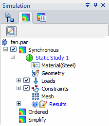
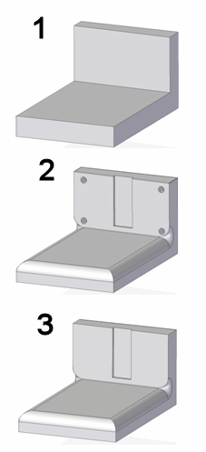
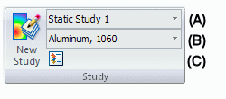
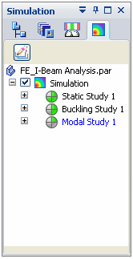

Creating and using studies
Creating studies
A study is a container that organizes data. The study also is responsible for meshing and solving an analysis.
You use the New Study command  to create a new study from the geometry in the current part, sheet metal, or assembly
model. The New Study command:
to create a new study from the geometry in the current part, sheet metal, or assembly
model. The New Study command:
-
Assigns a default name.
-
Specifies a material.
-
Specifies the analysis type—such as linear static, buckling, or modal—to perform on the model.
-
Specifies the mesh type to be applied to the model.
Each study consists of model geometry, material, one or more load sets, one or more constraint sets, and a geometry mesh.
You add these to the study using the commands in the Study group, the Loads group, the Constraints group, and the Mesh group on the ribbon.
Once created, a default study name is displayed in tree-view format on the Simulation pane in the lower-left portion of the window. You may want to assign each study a custom name using the Rename command on its shortcut menu.

Studies and model states
You can create studies using synchronous (1), ordered (2) and simplified (3) models. These model states are defined in the Tools tab→Model group.

For part and sheet metal models:
-
Each model state created in PathFinder has its own entry in the Simulation pane. The currently active model state determines where a new study is created.

For example, you can create a new study for a simplified part by clicking the Simplified node in PathFinder to activate it, and then selecting the Simulation tab→Study group→New Study command.
-
When you select an existing study, the model geometry changes to reflect its associated state.
You can define as many studies as you need for each model state.
Assembly studies that use simplified parts are listed under the top-level Simulation node in the Simulation pane, just like assembly studies that do not use simplified parts.
Selecting geometry for studies
When you create a study, you are prompted to select geometry based upon your model type—assembly, part, sheet metal—and the mesh type you selected.
See the following help topics:
Assigning a material to a study
You can confirm the default material or assign a new material.
-
You can assign a material to the model using the Materials list in the Study group.
-
You can modify the properties of a material using the Material Table
 command.
command.
To learn more, see Using materials in studies.
Identifying the active study
Although you can create multiple studies within one Solid Edge document—and multiple studies within each model state—there can be only one study that is active at any time. When a study is active, the study name and applied material are displayed in the Study group on the ribbon.
|
 |
|
|
(A) |
|
|
(B) |
|
|
(C) |
Opens the Solid Edge Material Table dialog box. |
All studies you have created in the model also are listed in tree-view format on the Simulation pane.

-
The active study is shown in blue text.
-
You can activate a different study in the Simulation pane by clicking the study node.
Study definition requirements
The Solve command is not available until minimum study definition requirements are met and the model is meshed.
-
At least one load is required when:
Study type=Linear Static
Study type= Linear Buckling.
-
At least one assembly connector is required for linear static studies of models that contain more than one part or sheet metal component.
-
At least one constraint is required for:
Study type=Linear Static
Study type= Linear Buckling.
Note:-
When Study type=Normal Modes, no loads or constraints are required to solve it.
-
You can solve a linear static study of an assembly in motion without adding constraints to the model by selecting the Use inertia release option in the Create Study dialog box. For more information, see Advanced options for studies.
-
How do I
Verify simulation material propertiesCreate a study
Create a study using a simplified model
Define a coupled study for thermal stress analysis
Assign units in studies
Define and review a transient heat study
Define a harmonic frequency response study
Learn more
Using materials in studiesModifying studies
Structural studies
Thermal studies
Using steady state heat transfer studies
Coupled studies
Harmonic response studies
Create and solve a study using GD optimized model
Create and solve a study using an STL model
Defining thermal studies
Look up more details
Create Study (or Modify Study) dialog boxTransient Heat Options dialog box
Options: Harmonic Frequency Analysis dialog box